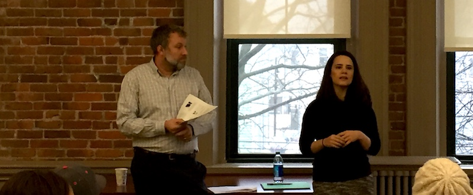

2016-12-18 08:00

The Trump presidency is shaping up to be a temporary win for white supremacy and intolerance. No groups in America are less secure now than Muslims and immigrants – and by “immigrants” I mean people here in the United States legally. Retroactive enforcement of the draconian 1996 Immigration Reform Act makes many relatively small crimes deportable offenses – even for those here for decades.
On Saturday I attended a community forum at the Immigrants Assistance Center hosted by Helena DaSilva Hughes. The meeting was intended to calm New Bedford’s frightened immigrant community and provide insights into changes the Trump administration might make and to review immigrant rights under the law.
There were three speakers: Schuyler Pisha, Legal Director at Catholic Social Services; Rita Resende, a lawyer at Watt & Sylvia; and Marcony Almeida-Barros, of the Massachusetts Attorney General’s office. Attendees learned what sort of changes the Trump administration could make on Day One; about changes to existing immigration law that are unlikely; and about changes virtually impossible because of the Bill of Rights. If anyone is interested in the details, here are my meeting notes or (if you read Portuguese) there should be an article in “O Jornal” next Friday. The Attorney General’s representative gave a brief outline of services the AG’s office provided to anyone in Massachusetts. “You have rights,” he told everyone. “And you have a state agency to help you.”
The Immigrants Assistance Center (IAC) has a surprisingly tiny budget of $350K, 10% of which consists of donations through fundraising, while the remainder comes from foundations, grants, and small contracts with the City of New Bedford. Each year the IAC, which has a staff of 8, serves about 7,000 people. It could do a lot more with your financial help.
But besides financial support, the IAC could really use your skills: - grant-writing - one or two full time ESOL (English as a Secondary Language) teachers, or four part-timers (bonus points if you speak or read Portuguese and Spanish or both)
The IAC is small but mighty. Please help them help our community.
= = =
Much has been written about the reasons for Donald Trump’s election and how Democrats can get their act together. One of the best prescriptive pieces I’ve read appeared in the Sunday Standard Times and was written by Scott Lang, who has some unique insight into the party’s machinery. I’m not sure Democrats can wait until the middle of 2018 for a new platform but Lang’s essay should kick off an honest discussion of: What Next?